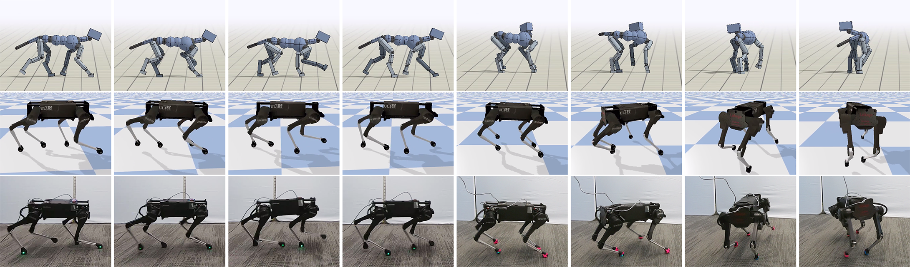

Robotics: Science and Systems (RSS 2020) Best Paper Award
Xue Bin Peng (1,2)Erwin Coumans (1)Tingnan Zhang (1)Tsang-Wei Edward Lee (1)Jie Tan (1)Sergey Levine (1,2)
(1) Google Research (2) University of California, Berkeley

Abstract
Reproducing the diverse and agile locomotion skills of animals has been
a longstanding challenge in robotics. While manually-designed controllers have
been able to emulate many complex behaviors, building such controllers involves
a timeconsuming and difficult development process, often requiring substantial
expertise of the nuances of each skill. Reinforcement learning provides an
appealing alternative for automating the manual effort involved in the
development of controllers. However, designing learning objectives that elicit
the desired behaviors from an agent can also require a great deal of skill-specific
expertise. In this work, we present an imitation learning system that enables
legged robots to learn agile locomotion skills by imitating real-world animals.
We show that by leveraging reference motion data, a single learning-based approach
is able to automatically synthesize controllers for a diverse repertoire behaviors
for legged robots. By incorporating sample efficient domain adaptation techniques
into the training process, our system is able to learn adaptive policies in
simulation that can then be quickly adapted for real-world deployment. To
demonstrate the effectiveness of our system, we train an 18- DoF quadruped robot
to perform a variety of agile behaviors ranging from different locomotion gaits
to dynamic hops and turns.
@inproceedings{
RoboImitationPeng20,
author = {Peng, Xue Bin and Coumans, Erwin and Zhang, Tingnan and Lee, Tsang-Wei Edward and Tan, Jie and Levine, Sergey},
booktitle={Robotics: Science and Systems},
year = {2020},
month = {07},
title = {Learning Agile Robotic Locomotion Skills by Imitating Animals},
doi = {10.15607/RSS.2020.XVI.064}
}